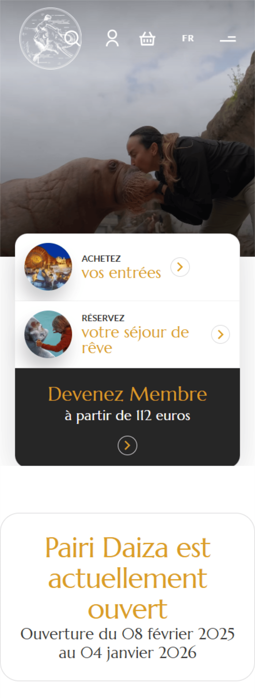
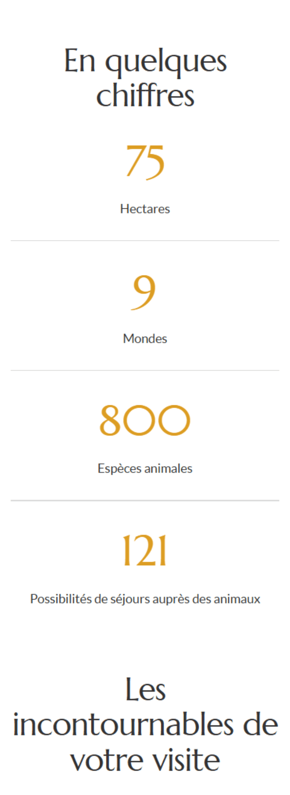
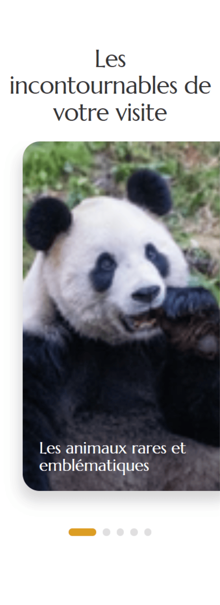
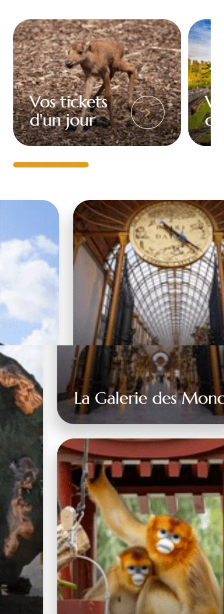

Que la montagne est Belle
Je vais vous raconter qui il est et vous donner envie de le rencontrer à votre tour !


Ce qu’il aime faire de son temps libre ?
Que la Montagne est Belle adore raconter des histoires ! Le plus souvent, ce sont des récits qui font frissonner : des histoires qui nous plongent dans des univers à la fois effrayants, oppressants et étrangement magnifiques. Chaque récit nous enveloppe d’une atmosphère mystérieuse, où la peur se mêle à la fascination, et où chaque détail semble chargé d’une beauté sombre qui captive autant qu’elle inquiète.


Depuis combien de temps es ce que je le connais ?
Cela fait maintenant deux ans que je l’ai rencontré, et je le vois presque tous les jours. La première fois, c’était dans une petite librairie de Liège. Il était devant le rayon des thrillers, concentré, en train de chercher de l’inspiration pour une nouvelle histoire. Je me souviens qu’il fronçait légèrement les sourcils en lisant les résumés, vraiment absorbé par ce qu’il faisait. Depuis, on se croise régulièrement. On ne parle pas beaucoup : en général, on s’échange simplement un “bonjour”. C’est bref, c’est simple, mais ça suffit à me mettre de bonne humeur. C’est un peu étrange, mais cette petite habitude est devenue rassurante pour moi. Et moi, ça me suffit.


Le site original
Dans le cadre scolaire, j’ai dû choisir un site existant et le reproduire à l’identique, tout en adaptant son contenu à un autre sujet. L’ensemble de la structure HTML, CSS et JavaScript devait respecter les bonnes pratiques de développement. J’ai donc choisi le site de Pairi Daiza, un zoo, car il m’inspirait particulièrement par rapport au contenu que je souhaitais intégrer au projet.
Vous trouverez toutes les informations concernant le site original en cliquant sur le bouton ci-dessous




Ma version
J’ai donc choisi un livre que j’aime particulièrement et je lui ai donné une personnalité, le présentant comme un ami. Le site raconte alors le temps passé ensemble, en remplaçant toutes les images et les textes d’origine par nos propres aventures.
Comment tout à commencer et ce qu’il ma apporter dans la vie ?
Souvent, quand je ne sais pas quoi faire, je m’ennuie, et j’ai vraiment du mal à choisir quoi faire. Mais lui, il m’a attirée directement. Il m’a donné envie de passer du temps avec lui sans que ça devienne compliqué, sans que je me pose mille questions. Alors on restait simplement là, assis sur le canapé, et je l’écoutais me raconter des histoires. Il s’amusait toujours du fait que j’essayais de deviner ce qui allait se passer avant qu’il ne le dise, un petit sourire aux lèvres dès qu’il voyait que je commençais à réfléchir trop fort. J’ai réussi à trouver certaines choses, mais pas tout. Tout au long de son récit, je n’ai cessé d’être surprise par ses retournements de situation, par la manière dont il arrivait à me perdre pour ensuite complètement me rattraper.
On a fait plusieurs pauses au cours de cette aventure, ne serait-ce que pour manger, dormir, souffler un peu… vivre, en un mot. Mais à chaque fois que j’avais un moment devant moi, il reprenait son récit exactement là où on s’était arrêtés, comme si l’histoire avait continué à exister entre nous, même pendant les pauses.
En quelques mots
Caractaire
Téméraire
Physique
Grand
Mentalité
Solitaire
Comportement
Taquin
Quelques photos

Quelques petites choses sur lui !
Il a toujours été très créatif, et ce depuis tout petit. Dès qu’il a su parler, il s’est mis à inventer des mondes entiers, comme si son imagination débordante avait toujours été là, prête à s’exprimer. Enfant, il transformait chaque objet du quotidien en personnage ou en élément d’une aventure fantastique : une simple branche devenait une épée magique, une couverture se transformait en portail vers un autre univers. Il adorait surtout raconter des histoires, toutes plus effrayantes, étranges ou délirantes les unes que les autres, au point que certains de ses récits faisaient hésiter entre rire et frisson. Ses proches se souviennent encore de ces soirées où, les yeux brillants d’enthousiasme, il captivait tout le monde avec ses inventions improvisées, comme s’il vivait réellement ce qu’il racontait.
Ce qui frappait le plus, c’était sa capacité à créer des ambiances : il modulait sa voix, décrivait les lieux avec précision, ajoutait des détails inattendus qui donnaient vie à ses histoires. On aurait dit qu’il voyait dans son esprit chaque scène avant de la décrire. Cette imagination sans limite faisait déjà de lui un véritable conteur en herbe, doté d’une sensibilité particulière aux émotions, aux personnages et à l’atmosphère d’un récit. Au fil des années, il n’a fait que nourrir et perfectionner ce talent naturel, laissant s’affirmer une personnalité profondément inventive, curieuse du monde et passionnée par tout ce qui touche à la création. Aujourd’hui encore, cette créativité constitue l’un des plus beaux traits de son caractère : une force qui l’accompagne, le définit et illumine ceux qui ont la chance d’écouter son univers prendre vie.
Où est-ce que je l'ai rencontré ?
Combien ai-je dépensé avec lui ?
Nos aventures
Avez-vous envie de le rencontrer ?
Je ne vous en voudrais pas de me le laisser, bien sûr.
Mais si jamais vous voulez quand même apprendre à le connaître vous le pouvez, je pense que vous serez agréablement surpris en apprenant à le connaître ! Venez et faites sa connaissance.